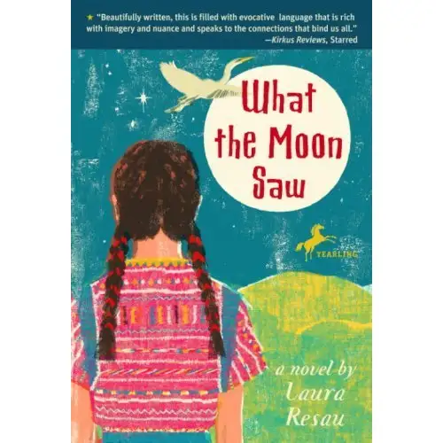

Welcome back to “7 Quick Takes Friday,” an occasional feature that offers a glimpse of where my thoughts have been lately.
-1-
QUOTE WORTH SHARING: I heard this on Catholic radio this morning and it was one of those quotes that grabbed me and wouldn’t let go.
“When we are whom we are called to be, we will set the world ablaze.” — St. Catherine of Siena
I mean, isn’t this what our whole existence here on earth is about? To discover whom we are called to be, and then to go about being that? I really believe that it is. And every time I hit upon that thing that I’m here to do, I feel my very soul come alive, as if it is igniting from within.
Here are a few moments from my week in which my heart lit up for a bit:
SACAGAWEA: Never mind the controversy on how her name is spelled and pronounced. “Bird Woman” is my favorite of the Lewis & Clark voyagers. And I was thrilled to learn my youngest daughter had garnered the part of Sacagawea (Hidatsu spelling) in her school musical earlier this week.
{kind=link}
I lent her my beaded pendant hair tie, the same one I wore as a boys’ basketball cheerleader my junior year of high school at the Montana Class B basketball championships.
{kind=link}
Peek at her performance at the bottom of this post.
-3-
BAD HAIR DAY: If you didn’t read about my son’s bad hair day earlier this week, you can read it here (hopefully after you’ve finished the rest of these quick takes!).
-4-
FIELD TRIP: On Monday, the same son mentioned above set off for his kindergarten fall field trip. A friend and I, another kindergarten mother, followed behind in our van.
{kind=link}
Destination:
{kind=link}
{kind=link}
We were welcomed by:
{kind=link}
The kids had a great time running through the hay-bale maze:
{kind=link}
And peeking through holes purposefully placed:
{kind=link}
And riding on a horse-driven rig to look at spooky displays along the river:
{kind=link}
And looking through what was left of the fall pumpkins in the patch. It’s not surprising that some of them were rotting:
{kind=link}
The snake zucchini was interesting, too:
{kind=link}
It ended with each child getting to pick a small pumpkin to bring home with them:
{kind=link}
{kind=link}
-5-
WHAT I’M READING: 
{kind=link}
-6-
NEW BABY: Beth and I went to my friend’s house yesterday to meet her new granddaughter. There’s nothing quite like new life!
{kind=link}
-7-
CAMP WILDERNESS BOUND: Our family is heading to our annual fall trip to a Boy Scout Camp near Park Rapids, Minn., later, where we’ll undoubtedly hear plenty of ghost stories and camp songs and enjoy a few nature hikes with our college friends.
For more “quick takes,” visit Jennifer @ Conversion Diary!
Q4U: With whom do you join forces to set the world ablaze?